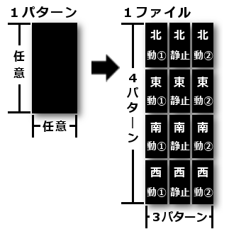
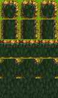
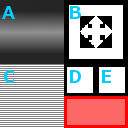

本ソフトは、RPGを作るための統合オーサリングツールと呼ばれるものです。
有名な類似ソフトはいくつかありますが、RPGツクールシリーズ、WOLF RPGエディター等、その類のものに相当します。
特筆すべき点はグループ製作を念頭に置いている点、データベースの拡張性、スクリプトによる拡張性の3点です。
はじめに
機能・特徴
グループ製作に特化
RPGを一人だけで作り上げるのは相当な労力を要します。
少なくともシナリオ、データベース、マップ等といったように役割分担がないと小規模であっても完成は困難を極めます。
本ソフトでは、グループ製作を支援する機能や機構として、スケジュール管理・編集中ファイルの排他的アクセス制御・全ファイルのプレーンテキスト管理 をサポートしています。
たとえば、Git等、外部のバージョン管理ツールを導入することによってバージョン管理、差分検出、競合発生時のマージ、レビュー等を行うこともできるようになります。
2ペイン表示
TODOリストやプランナーから出された指示書を見ながらデータベースやマップ、イベントを作っていくというようなケースは多々あります。
従来版では確認の度にタブを切り替えるという作業が必要でしたが、本ソフトでは比較的高解像度の環境用に画面を2つに分割して作業できるようにしました。
様々なユースケースを考慮して、各エディターのタブはそれぞれ左右のペイン間を自由に行き来できるようにしています。
スクリプト
ゲームプログラムの動作は標準サポートしている最低限の部分を除いてはすべてスクリプトで自由に実装できるポリシーを取っています。
しかしながら、この「スクリプト」を書くためには多少のプログラミング経験が必要となります。
プログラミングに精通していないユーザーでも多少なりとも編集がしやすくなるように、入力支援やツールヒントを充実させました。
また、ゲーム中にスクリプトの再読込ができる利点を活かして、トライ＆エラーを繰り返しながらの実装も可能となっています。
データベース
プログラムだけでRPGで作ることを考えたときの一番の障壁だと思われます。
本ソフトで扱うデータベースとは、キャラクターやアイテム、スキル等、一定のまとまりを持った情報をいわゆる表形式で管理します。
拡張性を念頭に置いており、一つのセルに数値を複数入力できる箇所を用意することで使用用途を自由に定義することができます。
エフェクトやタイルセット、ユニットの編集ではグラフィカルな編集が必要であるため、ビジュアルエディターを使って編集できるようにしています。
なお、一部システムに必要な項目を除いて、基本的にはスクリプトとの連動が前提となっています。
マップ・イベント
こちらもプログラムだけでRPGを作るには骨が折れる要素だと思われます。
本ソフトの開発に至るルーツはまさにマップを作るというところにありました。
絵を描く感覚でタイルや影を配置していき、マップ上での出来事を定義する「イベント」を編集します。
イベントの実際の処理内容はスクリプトで記述するため、自由度の高い製作ができます。
充実したデバッガー
ゲーム製作中の不具合は付き物です。
本ソフトではテストプレイ中にキャラクターのパラメーターを変更したり、任意のスクリプトコードを実行したり等、多彩なデバッグコマンドが使えます。
スクリプトのエラーが発生したときにはエラー箇所とその内容が示されるため、原因の解明に役立てることができます。
リリース版の発行
無事にゲームが完成したら、各種素材やマップ、スクリプト等を実際に遊ぶプレイヤーから取り出されないようにアーカイブ処理を行います。
また、痒い所に手が届かせる機能として、CD-ROMからの起動向けに自動起動の設定ファイルを自動生成したり、インターネットでの配布向けにZIP圧縮したりもできます。
動作環境
エディター
| OS | Microsoft Windows XP 以降のOS (32/64bit 対応) ※ 実行ファイルそのものは32bit向けにビルドしています。 |
|---|---|
| CPU | Intel Core i3 2.0 GHz 以上推奨 |
| メモリ | 1.0 GB 以上の搭載メモリ必須 (4.0 GB 以上推奨) ※ テストプレイをする場合はさらにゲームプログラムの消費メモリも充足している必要があります。 |
| 補助ストレージ (HDD/SSD等) |
空き容量 300 MB 以上 |
| ディスプレイ | 1280x800 以上 (2ペイン表示には 1920x1080 以上推奨) |
| 各種ランタイム環境 |
Microsoft .NET Framework 4.7 以降必須 Microsoft DirectX 9.0c 以降必須 |
ゲームプログラム
| OS | Microsoft Windows XP 以降のOS (32/64bit 対応) ※ 実行ファイルそのものは32bit向けにビルドしています。 |
|---|---|
| CPU | Intel Core i3 2.0 GHz 以上推奨 ※ 製作したゲームの処理量に依存します。 |
| メモリ | 2.0 GB 以上の搭載メモリ必須 (4.0 GB 以上推奨) ※ 製作したゲームの処理量に依存します。 |
| 補助ストレージ (HDD/SSD等) |
空き容量 100 MB 以上推奨 ※ ゲームに含まれる素材やデータの量に依存します。 |
| ディスプレイ | 800x600 以上推奨 ※ ゲームの解像度は設定によって変更できます。 |
| その他 | Microsoft DirectX 9.0c 以降必須 |
素材規格
素材については、特に大きな制約を設けていません。
基本的には「WOLF RPGエディター」に準じていますが、「RPGツクール」素材用に変換機能を設けているものもあります。
保存場所については、プロジェクトのMaterialフォルダー以下であればどの位置でも問題ありません。
ここでは、ゲームプログラムとエディタープログラムで標準規定している素材規格についてのみ記載します。
グラフィック素材
対応形式: BMP、PNG、JPEG
PNGのアルファチャンネルを前提としているため、透過情報のない画像ファイルは「ツール：画像を透過」を行って下さい。
| 歩行グラフィック |

マップシーンで移動するキャラクターの画像です。 1ファイルあたり1キャラクターで収めます。 1キャラクターあたりのサイズは縦横ともに任意です。 左図のように、4方向（上から順に 北・東・南・西）に対し、 3アニメパターン（左から順に 移動1・静止・移動2）の 合計12パターンを収めます。 標準規格において8方向には対応していません。 |
|---|---|
|
オートタイル |

オートタイルとは、隣接するタイルに応じて境界線が自動で作られる特殊なタイルのことを指します。 1タイルあたりのサイズは、システムDBに基づきます。 左図のように、必要なパターンは上から順に 独立・上下接続・左右接続・四方接続・八方接続です。 これをアニメーションさせる場合は左から右に並べていきます。 アニメーション数に上限はありません。 |
| オブジェクトタイル |
オートタイルとは区別される、単なるマップのチップです。 1タイルあたりのサイズは、オートタイルと同一でシステムDBに基づきます。 横に8タイル並べ、縦に任意数のタイルを並べることができます。 単なるチップであるため、アニメーションさせることはできません。 |
| アイコン・エフェクト |
1区画は正方形で、そのサイズはシステムDBに基づきます。 これを縦および横に並べていきます。 並べられる個数に上限はありません。 |
| トランジション |
画面や画像との合成に使われるグレースケールの画像です。 黒(RGB=0,0,0) から 白(RGB=255,255,255) へ徐々に向かっていく形で合成されます。 |
|
ウィンドウスキン |

この素材についてのみ「RPGツクールVX」に準拠しています。
左図のように配置します。
|
サウンド素材
サウンドは以下の形式に対応しています。
- MIDI
- Wave
- MP3
- Ogg Vorbis
※ MIDIはコントロールチェンジ111番でループします。
※ MIDIはパン変更に対応していません。
ムービー素材
ムービーはコーデックに依存します。
プレイヤー側のコンピューターに必要なコーデックがインストールされていない場合は再生できません。
無圧縮形式の場合はどの環境でも再生できます。
フォント素材
外部フォントは以下の形式に対応しています。
- FON (フォントリソースファイル)
- FNT (Raw ビットマップフォントファイル)
- TTF (Raw TrueType)
- TTC (TrueType フォントコレクション)
- FOT (TrueType リソースファイル)
- OTF (PostScript OpenTypeフォント)
利用規約
「RPG Developer NEXT」の利用について
本ソフトで作られた作品は、無償/有償、全年齢/アダルト等、目的問わず自由に利用・配布して構いません。
また、本ソフトを使って製作した旨を記載する必要は一切ありません。
サポートについて
配布における方針で、作者からは一切のサポートはいたしません。
万が一不具合等が見つかりましたら、GitHubにてソースコード一式を公開しておりますので、ご自由にForkの上修正して頂くか、Issueとしてご登録頂けますと幸いです。
GitHubの公開リポジトリーは こちら です。
免責事項
本ソフトは完全かつ永久的にフリーウェアとします。
エディターおよびゲームプログラムの著作権は、作者であるSATに帰属します。
本ソフトウェアの動作はすべての環境で保証するものではなく、また、本ソフトウェアの利用によって生じるいかなるトラブルについても作者は一切責任を負いません。
アイコンの差し替えについて
完成した作品の配布データに含められるゲームプログラムのアイコンに限り、外部ソフト等でのアイコン改変を認めます。
ただし、その操作によって生じるいかなるトラブルについて作者は一切関知しませんので、あくまでも自己責任で行って下さい。
外部素材の利用について
本ソフトウェアで行うゲーム製作においては、一般配布されている外部の素材を利用することを前提としていますが、その場合につきまして素材配布元の利用規約は必ずお守り下さいますようお願いいたします。
なお、RPGツクールシリーズのRTP素材やそれを改変した素材については、RPGツクールシリーズ以外での利用が禁止されていますのでご注意下さい。
プログラムフォルダー構造
[プログラムフォルダー] … ダウンロードしたデータを解凍してできるフォルダーです。
[Editor.exe] … 「RPG Developer NEXT」のエディタープログラムです。
[Game.exe] … 製作中にテストプレイに使われるゲームプログラムで、デバッグ用機能が含まれます。
[Game_Release.exe] … 製品版として発行するときに使われる、デバッグ用機能を落として軽量化・高速化したゲームプログラムです。
[GuruGuruSMF4.dll] … MIDIの再生に必要な外部ライブラリです。
[Azuki.dll] … エディターでテキストを編集するのに必要な外部ライブラリです。
[DxLib.dll] … エディターでマルチメディア処理を行うのに必要な外部ライブラリです。
[Manual フォルダー] … 本マニュアルが含まれます。
[PresetData フォルダー] … 新規プロジェクト作成時にプリセットデータが有効な場合に取り込まれるデータです。ユーザーによって自由に操作できます。
[Game.exe] … 製作中にテストプレイに使われるゲームプログラムで、デバッグ用機能が含まれます。
[Game_Release.exe] … 製品版として発行するときに使われる、デバッグ用機能を落として軽量化・高速化したゲームプログラムです。
[GuruGuruSMF4.dll] … MIDIの再生に必要な外部ライブラリです。
[Azuki.dll] … エディターでテキストを編集するのに必要な外部ライブラリです。
[DxLib.dll] … エディターでマルチメディア処理を行うのに必要な外部ライブラリです。
[Manual フォルダー] … 本マニュアルが含まれます。
[PresetData フォルダー] … 新規プロジェクト作成時にプリセットデータが有効な場合に取り込まれるデータです。ユーザーによって自由に操作できます。
プロジェクトフォルダー構造
[プロジェクトフォルダー] … フォルダー直下にはゲームプログラム、DLL、ゲームのウィンドウ設定ファイルが含まれます。
[$ProjectSystem] … エディターの内部システムで必要な情報が含まれます。バージョン管理下の競合発生時を除いて変更しないで下さい。
[Databases] … データベースエディターで編集できる情報が含まれます。バージョン管理下の競合発生時を除いて変更しないで下さい。
[Logs] … ゲームプログラムが出力したエラーログのファイルが含まれます。
[Maps] … マップエディターで編集できるマップデータ (タイル定義部) が含まれます。
[Materials] … フォントを除くすべての素材データが含まれます。ユーザーによって自由に操作できます。
[SaveFiles] … ゲームのセーブデータが含まれます。ゲームプログラムが読み書きする領域ですのでバージョン管理下の競合発生時を除いては変更しないで下さい。
[ScreenShots] … ゲーム中に撮影されたスクリーンショットが含まれます。
[Texts] … テキストエディターで編集できるテキストデータが含まれます。ユーザーによって自由に操作できます。
[Databases] … データベースエディターで編集できる情報が含まれます。バージョン管理下の競合発生時を除いて変更しないで下さい。
[$Effects] … エフェクトの再生で使われるスクリプトデータが含まれます。バージョン管理下の競合発生時を除いて変更しないで下さい。
[$Tilesets] … タイルセットの設定情報が含まれます。バージョン管理下の競合発生時を除いて変更しないで下さい。
[$UserDatabases] … ユーザーDBの列およびセル情報が含まれます。ユーザー変更は可能ですが、万が一不備があるとエディター上で編集できなくなることがあるのでご注意下さい。
[Fonts] … フォントデータが含まれます。ユーザーによって自由に操作できます。[$Tilesets] … タイルセットの設定情報が含まれます。バージョン管理下の競合発生時を除いて変更しないで下さい。
[$UserDatabases] … ユーザーDBの列およびセル情報が含まれます。ユーザー変更は可能ですが、万が一不備があるとエディター上で編集できなくなることがあるのでご注意下さい。
[Logs] … ゲームプログラムが出力したエラーログのファイルが含まれます。
[Maps] … マップエディターで編集できるマップデータ (タイル定義部) が含まれます。
[Materials] … フォントを除くすべての素材データが含まれます。ユーザーによって自由に操作できます。
[SaveFiles] … ゲームのセーブデータが含まれます。ゲームプログラムが読み書きする領域ですのでバージョン管理下の競合発生時を除いては変更しないで下さい。
[ScreenShots] … ゲーム中に撮影されたスクリーンショットが含まれます。
[Texts] … テキストエディターで編集できるテキストデータが含まれます。ユーザーによって自由に操作できます。
[$Scripts] … 一般テキストと区別するために、スクリプトファイルはこのフォルダーに含めます。
[$MapEvents] … マップに対応するイベントスクリプトが含まれます。ユーザー変更は可能ですが、不備があるとエディター上で編集できなくなります。
[$System] … ゲームシステム上必須のスクリプトが含まれます。ユーザーによって任意に追加されたスクリプトは、明示的に読み込む文を所定の場所に記述しない限りゲームプログラムから読み込まれることはありません。
[$System] … ゲームシステム上必須のスクリプトが含まれます。ユーザーによって任意に追加されたスクリプトは、明示的に読み込む文を所定の場所に記述しない限りゲームプログラムから読み込まれることはありません。
ライブラリ権利情報
本ソフトで使用しているライブラリの著作権情報は こちら をご覧下さい。